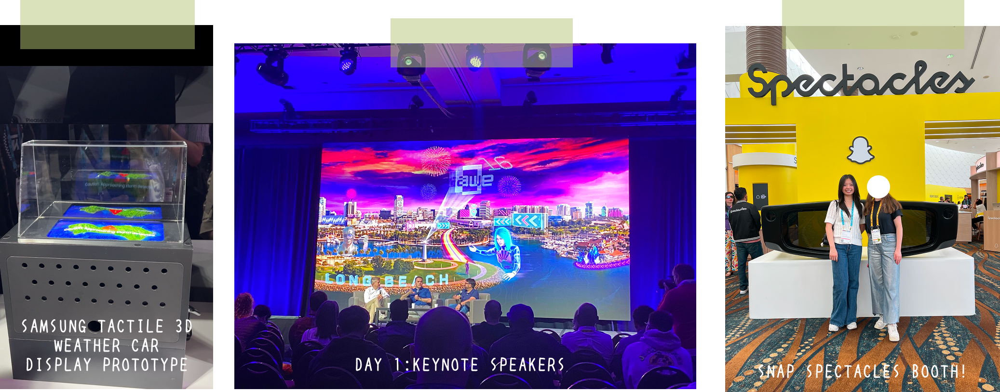
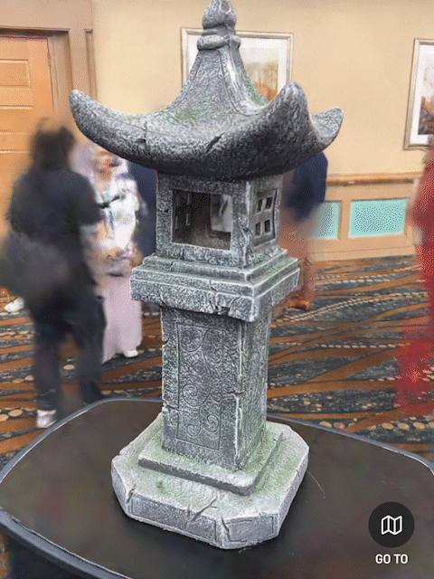
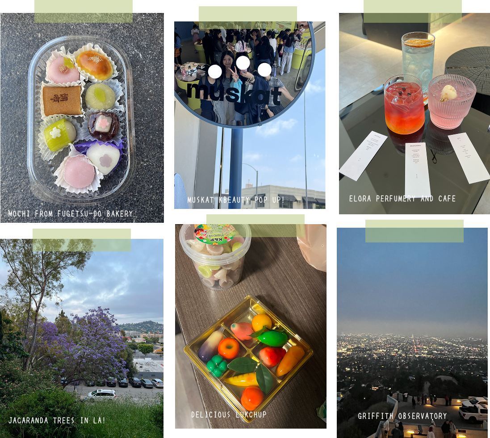
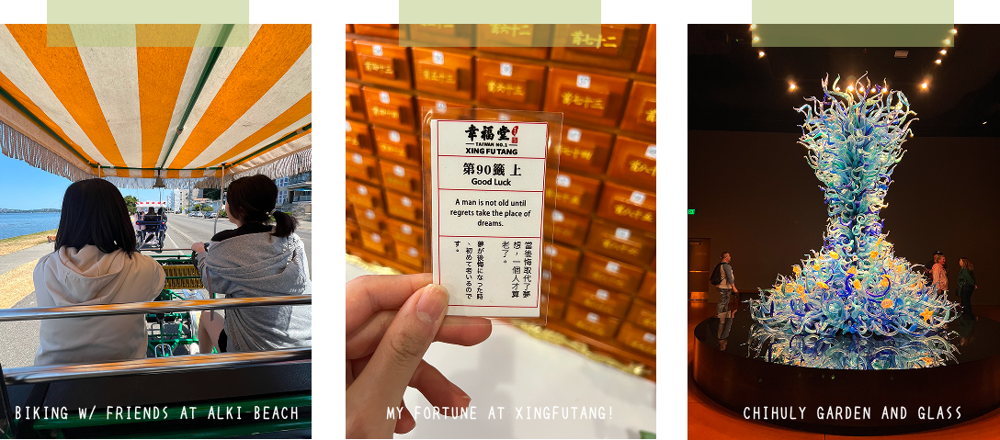

AWE EXPO + LA + SEATTLE TRAVELS
I was really lucky to get the opportunity to attend Augmented World Expo, the world’s largest XR conference in Long Beach, California, thanks to my company. If you aren’t familiar, AWE is a three-day event that brings together different companies and notable figures in the XR industry to showcase technologies and host workshops focused on the future of immersive experiences. I’ve been wanting to go since I first learned about it two years ago, since it’s not easy to meet people in this space! Everyday would start with keynote speakers in the morning and afterwards it would break into smaller talks as well as free exploration around the expo hall! I really liked seeing how many different companies are using immersive technologies and successfully building businesses.

I would say my biggest takeaway was how clearly the industry is aligning itself around smart glasses and using mixed reality to improve daily life as the future of XR. 2025 really feels like the year of smart glasses, with many industry-leading companies pivoting away from traditional VR headsets and toward wearable, everyday tech. This feels like a huge contrast to the industry response and negative stigma around Google Glass, which was released over ten years ago.
Starting with the Apple Vision Pro released in 2024, and with products like the Meta Ray-Bans gaining a lot of traction, it’s clear to me that companies recognize how much people’s comfort with these technologies has changed— especially through social media as a form of adoption. One announcement at AWEI found particularly exciting was Meta’s collaboration with Gentle Monster and Warby Parker. As someone who is a big fan of Gentle Monster, this crossover felt especially exciting and really shows that Meta wants this technology to feel cool, wearable, and mainstream.
These are just my personal thoughts, but having been in XR for the past six years, I understand that XR has many limits. The idea of XR is really cool, but VR can be gimmicky, and traditional AR apps haven’t fully lived up to the hype built around them. Even breakout AR experiences like Pokémon GO(which I almost wouldn’t even consider true AR, since what was truly unique is the geospatial walking gameplay)or Snapchat filters haven’t felt truly transformative on their own.
That’s why it was exciting to see the heavy interest in AI and mixed reality through lightweight frames at the conference. As one keynote speaker mentioned on day one, AI is the accelerator of XR, and I strongly agree. AI paired with mixed reality and computer vision is where I think XR technologies can allow digital information to exist alongside reality. One of the major limitations, though, is figuring out how to get these powerful systems onto lightweight glasses.
Niantic who was a big sponsor this year feels like a strong case study in this shift toward lifestyle based utility of XR. With their move toward Niantic Labs and the closing of their SDKs and 8th Wall, their focus seems to be shifting away from being primarily a gaming company and more toward spatial computing.
A standout topic that I wasn’t familiar with prior was Gaussian splatting, which completely revamps traditional photogrammetry. When I had the opportunity to try photogrammetry back in college, I could appreciate its ability to reconstruct meshes, but the process was tedious, and if not done well, the results could look awful. Gaussian splatting uses rapid, real-time 3D rendering techniques that improve traditional point clouds by replacing them with optimized, colored 3D ellipsoids. I think Gaussian splatting is especially important because it lays the groundwork for fast realistic captures of real-world spaces needed for what’s coming! With this, Niantic has played a big role in pushing Gaussian splatting from an academic technique into something more accessible through their app Scaniverse, which I also got to try out while I was at the expo.

Another popular set of AR glasses I got to try were Snap Spectacles, the new Snap glasses. The demo I tried was called Willow Wisp, a puzzle game where you look for a small, cute wisp while moving around the environment. One really cool aspect was how it used occlusion and computer vision to recognize objects in the environment. It was exciting to experience, though I do think the glasses are still a work in progress, especially in terms of comfort and fit.
But with where technology currently stands, I do think there are still a few more years ahead before everything fully matures. The next ten years feel like they’ll be an especially important period for XR. It’s exciting to watch, especially since one of the main reasons I fell in love with XR in the first place was the visual connection between the digital world and the physical one.
Beyond the technology, AWE is definitely an event that brings people together. It’s been two years since I graduated, and I got to reconnect with people I had met before, as well as meet new ones. If you’re interested in XR, I definitely think it’s worth going!! And more than anything, it felt really rewarding to be surrounded by so many people who are passionate about XR too!
LA
Prior to the expo, I also got to explore Los Angeles for the very first time. None of the photos I took did it justice — the streets were filled with beautiful jacaranda trees. We stayed near Thai Town, which turned into a routine of eating amazing food every evening. If you ever have the chance to visit, I highly recommend Ruen Pair! Their tom yum and pork jerky were crazy delicious. We also spent time shopping around the La Brea Avenue area. One café I can definitely recommend is Elora Perfumery and Café, a Korean-American perfumery where they serve beautiful drinks alongside their fragrances. I also tried the famous Erewhon smoothie. Personally, I’d say it’s a little overhyped, but still a fun LA experience.

SEATTLE
After the expo, I headed to Seattle to visit friends who live there. We visited iconic landmarks like the Space Needle, the Glass Museum, and Pike Place. I think I got lucky with the weather as temperatures were comfortable and it was always sunny. The famous Pike Place clam chowder was really good, and I enjoyed walking around and trying a bit of everything.
My favorite activity, though, was taking a ferry to Alki Beach and renting four-person bikes. I’ll admit I felt a little self-conscious at first, mostly because of the constant bell ringing and the bright yellow awnings bike, but it ended up being really fun. The hour-long ride along the beach was beautiful and relaxing. It’s definitely one of my most cherished memories!!

Overall, the trip felt like the perfect way to kick off the summer. It was nice to see friends I miss, connect with technology, and experience being somewhere new.